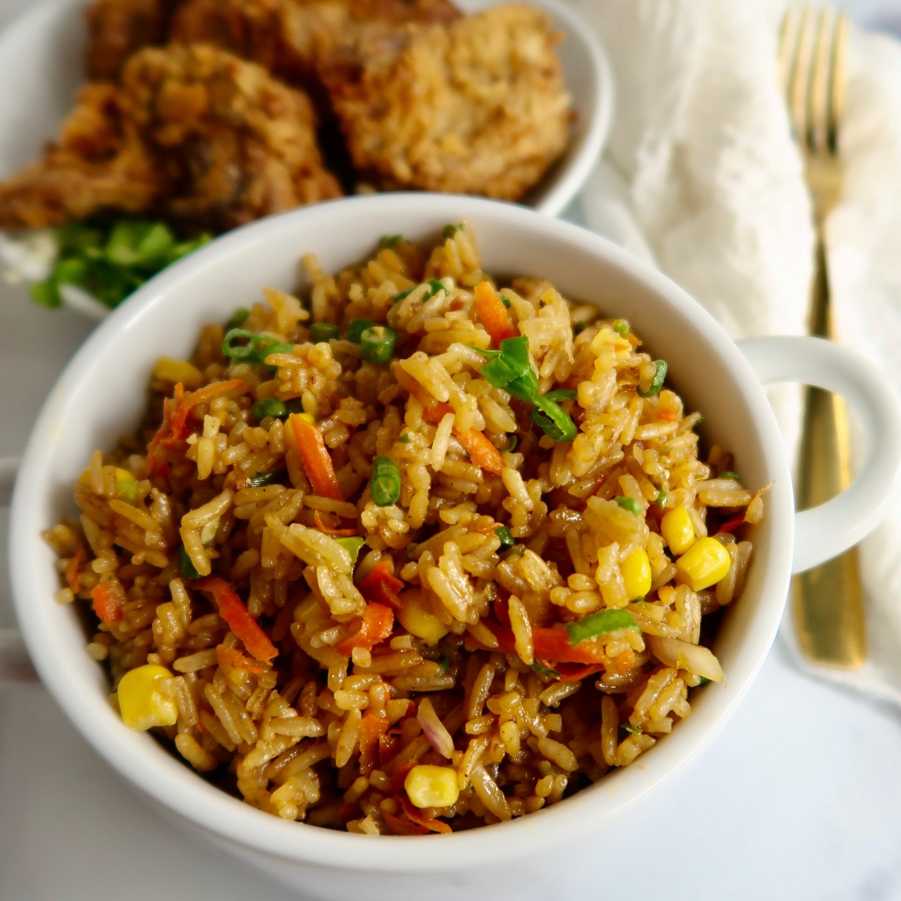

Fried Rice

A quick rice dish that can have a variety of different ingredients
Ingredients
- Rice
- olive oil (any type of oil works but olive tends to work well and is healthy)
- onions
- some sort of protein
Instructions
- First you need to cook your rice if you have a rice cooker use that. If not use a pot with boiling water and cook using that
- once you have cooked your rice add olive oil to a pan and let the oil heat to a simmer
- Once your oil is simmering add your rice to the pan alongside other ingredients like onions
- If you want your onions to be more seared add them before your rice
- you can add your protein and maybe spice it up with some egg
- once your rice looks like its starting to fry add some soy sauce or other flavoring to the dish
- mix around the ingredients until it looks to be fully cooked
- and you are all done